19 Chapter 19 — Automatic Eventing: State Machines, Confidence, Review Queues
From coordinate streams to coach-ready events without hallucinating a single one
19.1 The Three Layers of Eventing
Eventing is three layers: deterministic rules on coordinates, learned ML heads for ambiguous distinctions, and hybrid routing with a human queue underneath. The engineering rule is: use the deterministic gate wherever geometry decides the event; use the model only where it doesn't; route everything uncertain to a person.
| Layer | Claim | Pickleball | Rugby league |
|---|---|---|---|
| 1. State machine | Facts with proof obligations | Kitchen foot fault: foot point in NVZ at contact (E05/E11 homography, RMSE 3.82–4.65 cm, measured) | Six-tackle count, PTB, 10 m retreat |
| 2. ML classifier | Probabilities with calibration | Drive vs drop vs dink from the contact crop | Head-contact tackle screen (Bath et al. 2025: ~68% sensitivity / 84% specificity, source-backed) |
| 3. Hybrid + queue | Owned policy | E06 windows: review_required=yes, coaching_claim_allowed=no (measured) |
Every positive screen + random negatives to human review |
FIFA's automated event-data initiative and Stats Perform's Opta pipeline both use this shape: machines resolve the bulk, humans handle the residue. The book's twist is making the queue a first-class output state — an uncertain event is emitted, marked, and queued, so uncertainty is visible as work-in-queue rather than hidden as silence.
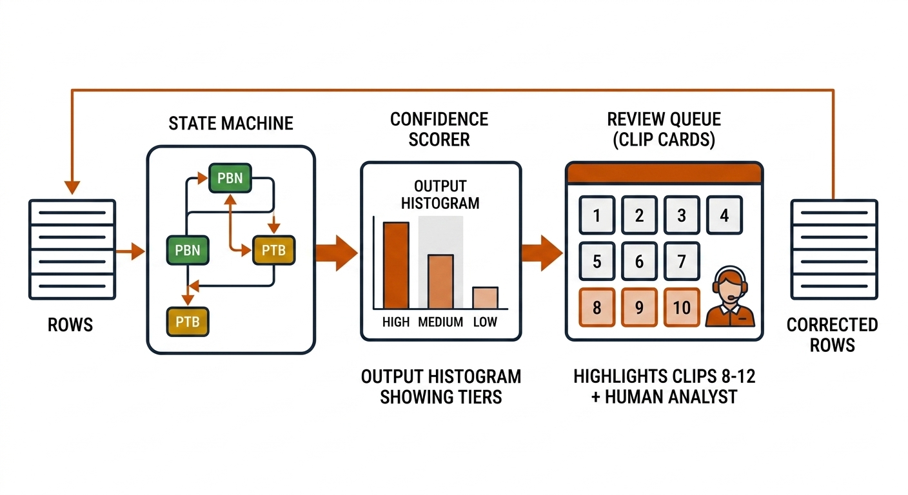
19.1b What Counts as an Event? Corpus Semantics
An event is a timestamped, evidence-backed state transition, not a frame label. A dink is the transition rally-continues → rally-continues through a contact with specific geometry. A tackle is play-active → play-paused via ball-carrier containment. That framing means a "dink" detected while the automaton is in SERVE state is a contradiction, not a mislabel — the correct output is UNKNOWN plus a queue entry.
The hierarchy is shared across sports. Pickleball: contact (E10, 0.814 precision, measured) → shot → rally → point. Rugby league: play-the-ball → tackle → set → try/kick/turnover. E06's windows speak only to the rally/set level — "four players co-persisted for 8.33 s." The row states which level it addresses, and the season summary never aggregates across levels silently.
19.2 Deterministic From Coordinates: The E06 Contract
E06's output is honest and sparse. It ingests E05's court tracks, applies a ≥12 m/s teleport filter, summarizes 7 tracks (median 0.8 m/s), and promotes contiguous runs of ≥4 on-court tracks ≥30 frames (1 s) to candidate windows.
| Candidate | Window | Duration | Basis | Evidence |
|---|---|---|---|---|
| e06-c001 | frames 67-317 | 8.33s | on-court track count ≥4 (movement proxy only) | real-experiment-output |
| e06-c002 | frames 493-878 | 12.83s | on-court track count ≥4 (movement proxy only) | real-experiment-output |
Both rows say coaching_claim_allowed=no and E06's own verdict: "no ball, contact, or shot-type claim is derivable from feet tracks alone." Nine hundred frames produce exactly two movement-fact windows. The rugby league analogue is identical restraint: the count, PTB, and retreat distance are deterministic, but a line break or dominant tackle from feet alone is refused.
19.2b The Pickleball Rally Automaton
The rule is: a transition fires only when its guard's evidence exists.
- IDLE → SERVE: ball stationary, then below-waist contact with striker's feet behind the baseline.
- SERVE → RETURN: second contact, receiving side, after bounce; serve-in-box verified or FAULT.
- RETURN → THIRD: serving side's third contact. The automaton owns that it is shot three; ML owns which kind.
- THIRD → RALLY: contacts alternate sides. Same-side consecutive contacts route to UNKNOWN, never a silent label.
- RALLY → FAULT / POINT: ball out, net, double bounce, or kitchen foot fault (contact instant ∧ foot point in NVZ polygon).
Each state carries a ball_visible flag. When it drops — and on pb-003 it often does, given E04's ball wall (1,082 detections, median confidence 0.1125, measured) — the automaton parks the segment as a review window rather than guessing the next transition.
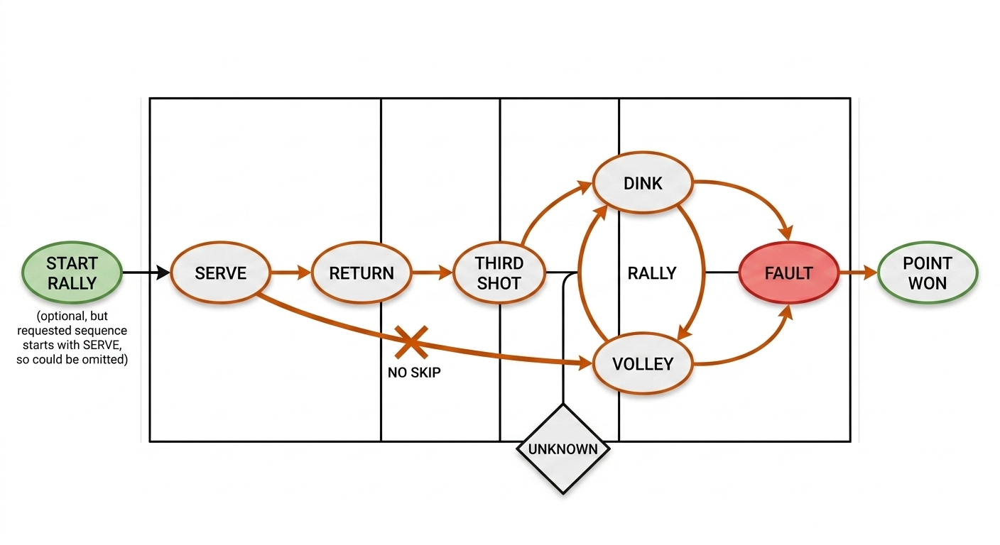
19.2c The Rugby League Set Automaton
Rugby league is more automaton-friendly because the sport is a counter with rules.
- SET_START → TACKLE_1: first ball-carrier containment after restart or PTB.
- TACKLE_k → PTB → TACKLE_(k+1): carrier grounded, ball played backward with foot, defenders 10 m retreat — all geometry-checkable.
- SIX_AGAIN reset: referee's whistle/audio proposes the count restart; vision confirms it.
- TACKLE_5/6 → KICK | TRY | TURNOVER: KICK is near-rule from the ball track; TRY is grounding in-goal (human-confirm before print); TURNOVER is count expiry.
The layer boundary differs from pickleball: the automaton owns the count, PTB timing, retreat, and kick; the ML+queue layer concentrates on the head-contact welfare screen and try adjudication under bodies. The boundary is decided by epistemics, not by model availability.
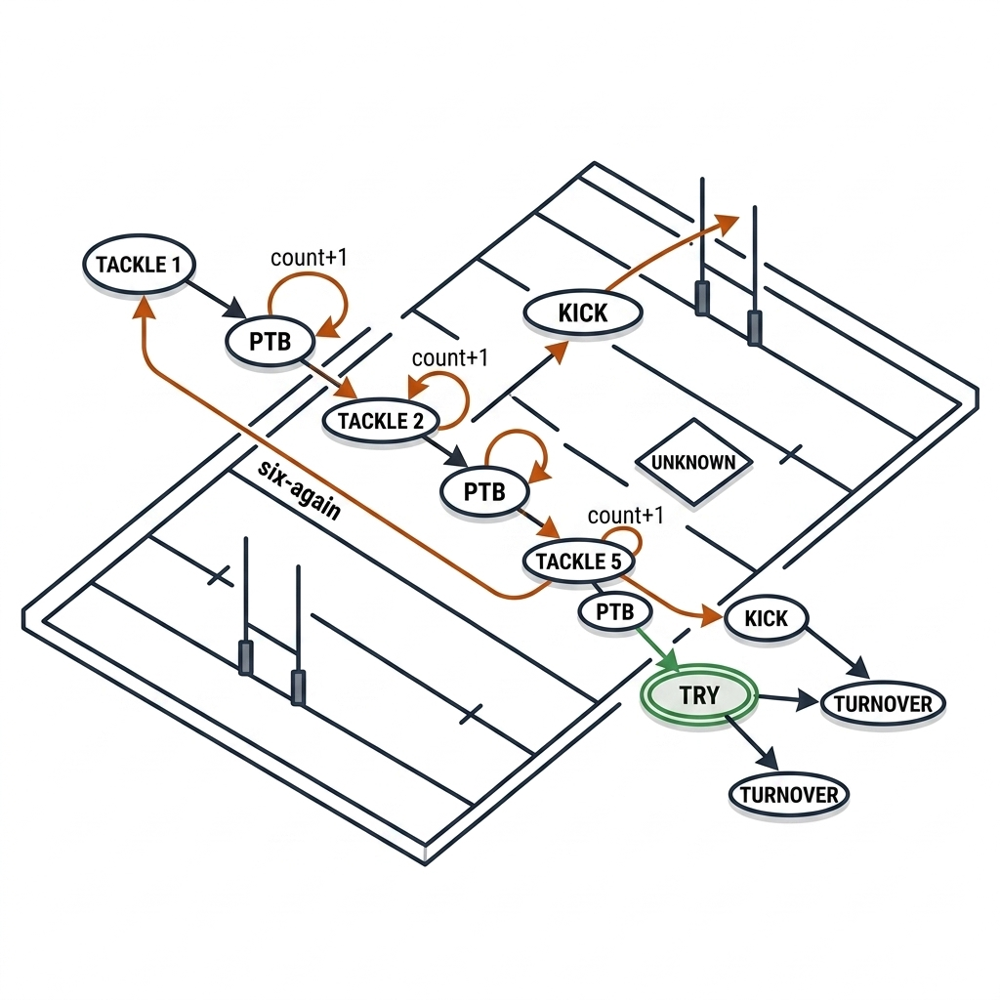
19.2d The Transition Table Is the Design Artifact
Implement the automaton as a table, not code. Rows are current states, columns are guards, cells are next state + event + evidence fields. This makes it auditable: "Why third-shot drop?" answers in one cell. It makes it diff-able: changing the kitchen-foot-fault guard is one cell, and the regression fixtures re-run. And it makes it complete: empty cells are owned gaps, not bugs.
Failure modes are table-shaped. Guard gaps fire UNKNOWN, never nearest-state — nearest-state fallback is how a tracker glitch at the kitchen line becomes a phantom dink. Guard overlap is resolved by explicit priority in the table header, with adjudication events outranking rally events. Evidence lag holds transitions pending for a bounded window; the pending state is visible in the queue.
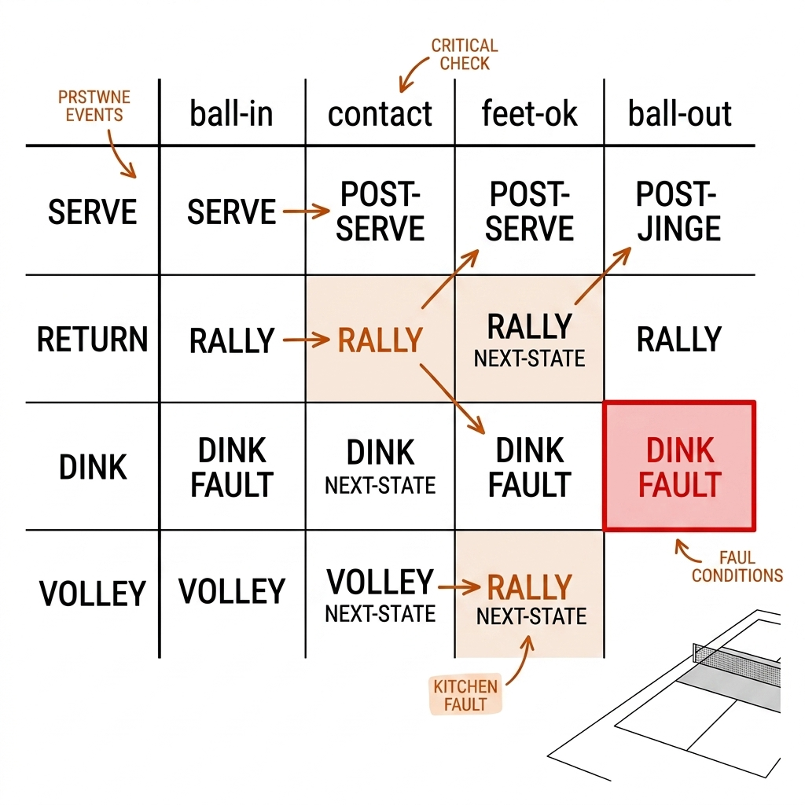
19.2e Why the Grammar Suppresses False Positives
E22 (experiments/e22-humans-above-the-loop, measured) demonstrates the grammar's power. A 1,000-event constructed stream across both sports was routed through the state machine plus a p < 0.05 significance gate. Of 1,000 inputs, only 119 alerts surfaced; 88.1% were structurally suppressed at 0.08 ms processing cost. The split is dual-sport by design: pickleball produced 27 NVZ foot-fault warnings (p = 0.012, foot 2.4–4.0 cm from the kitchen line) and 25 middle-seam exposures (p = 0.034, lateral gap expanding from 2.7 m toward 4.1 m); rugby league produced 32 dog-leg ruptures and 35 offside non-compliance alerts at the 10 m line.
Most suppression is structural, not statistical: the 881 silent events were grammar violations — a "speed-up" nominated in SERVE state, a "tackle seven," a contact with no legal predecessor. A pure per-window classifier must label everything it sees; the state machine rejects what the rules forbid. What does surface carries a p-value against the team's baseline, which is the difference between an alert a coach acts on and one they mute. Caveat: E22 is a constructed stream, not a season; 88.1% is a demonstrated ceiling, not a guaranteed rate.
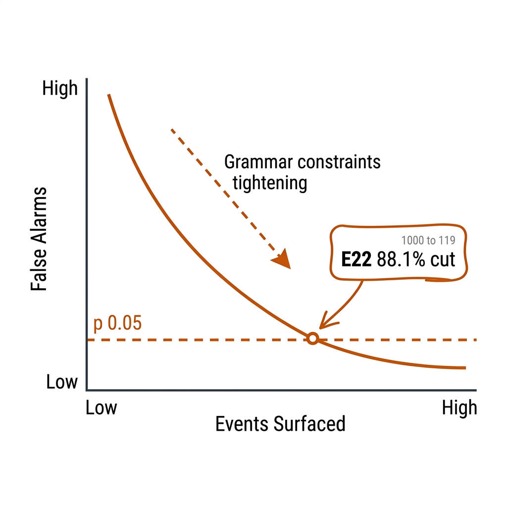
19.3 Confidence: The Evidence Stack, Not a Number
A confidence score is shorthand for the evidence behind it. The lab's scoring:
| Evidence Element | Score |
|---|---|
| real-experiment-output | +0.4 |
| manual-proxy | +0.2 |
| on-court track count | +0.2 |
| movement evidence | +0.2 |
| contact/ball evidence | +0.2 |
E06's windows score 0.8 (high) — the ceiling for movement-only evidence; they cannot reach 1.0 because the ball is missing, and that is correct. Tiers: ≥0.8 high (auto-accept), 0.6–0.79 medium (review), 0.4–0.59 medium-low (review only), <0.4 low (discard + log). C19's metrics.json reproduces this: two candidates at 0.8/high, both review-gated (measured).
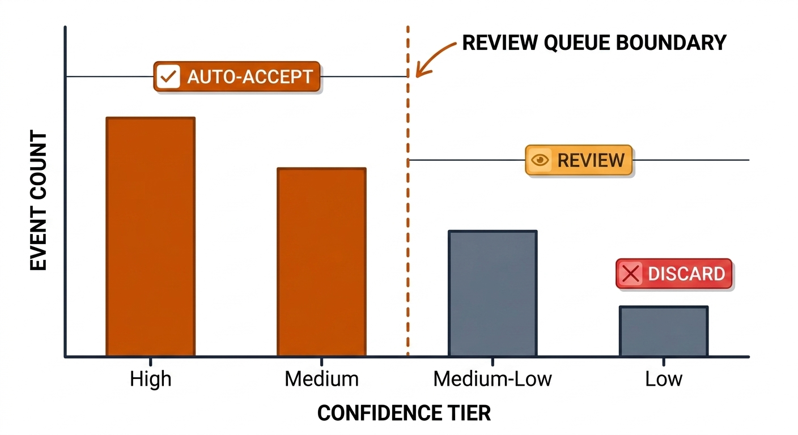
ML heads need calibration. Temperature scaling (Guo et al., ICML 2017) fixes overconfidence on a held-out validation split. Selective prediction (Geifman & El-Yaniv, NeurIPS 2017) gives the risk-coverage curve: the auto-accept fraction vs error on that fraction. Conformal prediction (Angelopoulos & Bates, 2021) gives distribution-free coverage sets, though at ~500 labels the sets may be wide — and that width is itself the signal to queue [verify set sizes at this scale]. E22's p < 0.05 gate is the same idea expressed as significance against a baseline. Confidence is per-field: a row can carry contact_state=confirmed (high, rule-fired) beside shot_type=unknown (queued, head uncertain), letting the season summary count confirmed facts and report unknowns as unknowns.
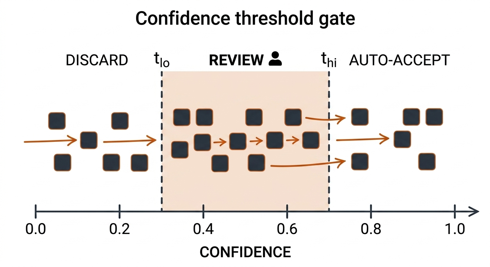
19.4 The Review Queue: The Human-In-The-Loop Valve
The pro-team workflow is 8–12 selected clips per session, not a dump. The queue ranks by confidence, caps the load, and writes corrections back to rows (human_correction=yes). Those rows become the new fixture (chapter 5's regression chain).
The queue is the product. FIFA and Stats Perform use humans precisely because the residue is where truth lives. The 8–12 rule bounds the coach-facing output, not the input. Auto-accepts are continuously audited: a random sample is re-reviewed, and the audit error rate feeds back onto the high threshold. In the welfare lane, the asymmetry is explicit: Bath et al.'s 68/84 point means every positive head-contact screen and a random negative sample goes to review, because a miss costs athlete safety while a false alarm costs an analyst ninety seconds. Every queued item returns as a labeled crop, so the queue is active learning by construction.
19.4b Event Timestamp Alignment
Three clocks meet at every contact: the 30 fps video frame clock (33 ms grid on pb-003), the audio clock (millisecond-fine onset detector from chapter 15), and the track clock. The rule is: audio proposes the when, vision confirms the what, and the event timestamp is the contact frame nearest the audio onset whose vision evidence agrees. Agreement upgrades to confirmed; disagreement queues both timestamps rather than silently picking one. Rugby league adds the broadcast production clock — replays and speed ramps — so the set automaton also anchors on the PTB metronome: three PTBs in four seconds is a replay artifact, not a set. No event carries more precision than its worst agreeing clock [verify on multi-camera footage].
19.5 Missing-Data Discipline
The hard rule: no ball/contact evidence → shot_type=unknown → no event emitted. C19 checked 11 PBN rows: 0 shot events were emitted without contact and ball evidence (measured). E04 is the canonical gap — 1,082 detections at median confidence 0.1125 means the ball is invisible half the time on pb-003. The correct response is E06's: emit movement facts and review windows, and write the wall into the artifact.
pb003-e005 already logs this: court_state=1_of_expected_4_active_players_visible, cue=coverage_gap_after_filtering, with the note "primary lesson is missing coverage, not player action." Chapter 15's two-bit confidence (audio+vision, audio-only, vision-only, none) and chapter 16's retrieval rule (similarity is not occurrence) are the same discipline. E07 is the anti-pattern: a VLM with no ball evidence hallucinated serves and lobs. For both automatons: ball lost → ball_visible=no propagates; dependent fields become unknown; the segment is still emitted as a review window with the gap named.
19.6 Shot Classification
The 12-event pickleball taxonomy (serve/return/third-drive/third-drop/drive/drop/dink/speed-up/volley/lob/overhead) is typed from a contact crop: at the contact frame (audio-timed, pose-confirmed), crop the striker + paddle region and classify. The ~500 hand-labeled crops (chapter 18's IRR-gated pass) fine-tune a small CNN or a frozen-feature linear head (chapter 16's recipe). Never classify from a full-frame still. The context mask — who, where, when — is the input, not the raw frame.
The external template is TTStroke-21 (MediaEval Sport Task; CRISP methodology, arXiv:2301.13576): table-tennis stroke detection + 20-class classification with a 21st rejection class — external proof that unknown belongs in the taxonomy. Its documented low inter-class variability is the honest forecast: expect dink↔speed-up and drop↔drive confusion to dominate. No public shot-labeled pickleball dataset exists (verified 2026-09-01); the taxonomy and labels are the book's own contribution, so there is no benchmark to compare against. Rugby league's lane is narrower but heavier: the head-contact screen (Bath et al. 2025, ~68%/84%) is a welfare screen where the classifier proposes and the human disposes — same crop-classify-queue recipe, but the cost of a miss is athlete safety.
19.6b The Dual-Sport Event Vocabulary
The two grammars share a skeleton. The table below makes the transfer concrete:
| Role | Pickleball (PBN) | Rugby league (NRL-set) | Layer |
|---|---|---|---|
| Atom | contact (E10 ∧ audio onset) | play-the-ball | hybrid |
| Opener | serve → return | set restart → tackle 1 | rule |
| Counted body | rally shots (dink, volley, drive, lob, speed-up) | tackles 1–5, PTB metronome | rule for count; ML for type |
| Terminal | fault / point won | kick / try / turnover | rule; try human-confirmed |
| Irregularity | let, kitchen foot fault | six-again, offside, ruck infringement | rule + audio |
| Gap | unknown (PBN dictionary) | unknown (NRLSheet) | queue |
Both vocabularies are phase-derived: third_shot_* is "shot 3 of the rally" exactly as tackle_3 is "containment 3 of the set." Both separate shots from calls (dink vs kitchen foot fault; run vs offside). Both carry unknown as a first-class label, the TTStroke-21 rejection class transplanted. What differs is instructive: pickleball's rally is unbounded (termination detection matters), while league's set is a hard counter (six-again reset detection is the fragile transition and leans on the audio lane).
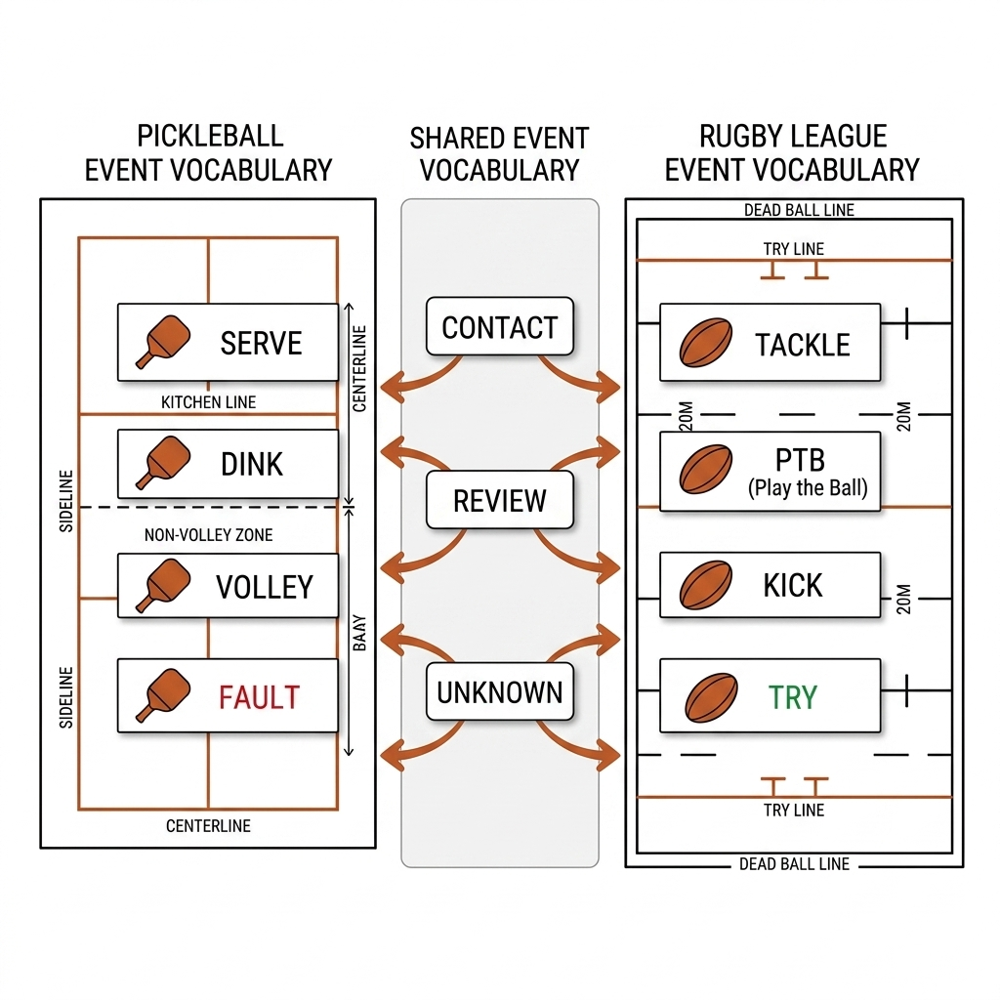
19.7 Error Analysis: The Confusion Matrix Is the Report
Publish the confusion matrix, not accuracy. A false serve and a missed serve have different coaching costs. The honest report separates precision and recall, with the aggregated error cost as the decision metric.
Three readings are mandatory. Off-diagonal mass: dink↔speed-up and drop↔drive should dominate; serve/fault/let (rule-owned) should sit near zero because rules have bugs, not confusion. Class-conditional operating points: speed-up can run high-recall (queue overcalls; coaches want to see every speed-up), while third-shot typing runs high-precision (chapter 22's EV surface cares about not mislabeling). Per-rally clustering: contacts within a rally are not independent, so intervals come from a rally-level cluster bootstrap (chapter 20). Rugby league deliberately inverts the cost matrix: at 68% sensitivity the head-contact screen is good enough to screen and never to adjudicate, so the operating point sits toward recall and the queue absorbs the overcalls.
19.8 Season Machinery
The pipeline: perception stack → state machine → contact anchors → calibrated heads/rules → confidence router → human review → corrected event table → season summary. The summary is the review artifact: per-player counts, shot distributions, pressure windows — every number traceable to its rows and evidence tiers. Two properties make it machinery. Reviewed rows only: unreviewed rows never publish, so the weekly artifact is also the audit surface. Queue metrics are season KPIs: auto-accept rate, queue depth, clearance time, audit error rate, unknown rate, per-class review burden — these describe the season actually shipped, which is more honest than test-set accuracy. The rugby season gives the deterministic layer more to own (count, PTB, kicks) and concentrates the ML+queue layer on the welfare screen and line-break antecedents.
19.8b The Ten Eventing Use Cases: Applied Framework
The use cases below are the applied bridge from the three layers above to the two sports. They follow three categories: A — Structure Events: segmentation and alignment (UC 01, 02, 10), B — Counted-Body Events: shots and set plays (UC 03-07), and C — Adjudication & Gating Events (UC 08, 09). Each case states the practical problem, the exact state-machine mechanism with its transition math, a figure, a pickleball box and a rugby league box, and a payoff line naming who benefits. Every case carries its evidence label: measured (E-series), source-backed (paper), or [verify].
Category A — Structure Events: Segmentation & Alignment (UC 01, 02, 10)
UC 01 — Pickleball Rally Segmentation: Serve to Fault
A rally is the unit every downstream statistic divides by — shots per rally, rally-length distribution, third-shot outcome rates. Today an analyst segments rallies by scrubbing video; a 900-frame clip costs twenty minutes. The eventing layer's first job is emitting bounded rally segments with proof obligations attached.
The mechanism is the contact-anchored extension of E06's state machine (19.2b). The automaton walks IDLE → SERVE → RETURN → THIRD → RALLY → FAULT/POINT; a segment is the maximal path from the SERVE transition to any terminal. Formally, with contact instants $c_1 < c_2 < \dots < c_n$ from the E10 heuristic (0.814 precision, measured) intersected with chapter 15 audio onsets, the segment is $[t(c_1), t_{term}]$ where $t_{term}$ is the first frame a termination guard fires: ball-out polygon test, net-plane termination, double bounce, or kitchen foot fault. Each transition is one row of the 19.2d table: $\delta(s, g) = (s', \text{event}, \text{evidence})$, and a guard fires only when its evidence streams are present. Without the ball — E04's wall, 1,082 detections at median confidence 0.1125 (measured) — the automaton degrades exactly as E06 did: co-presence windows of 8.33 s and 12.83 s, review_required=yes, never a rally claim.
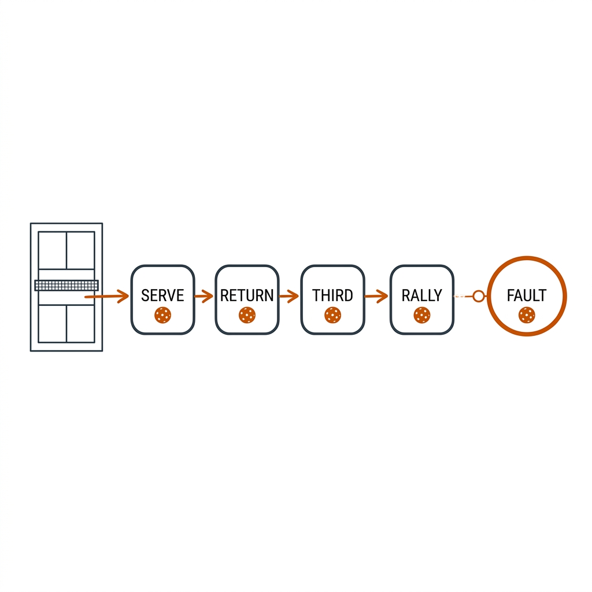
Pickleball: the rally segment is the join key for the whole book — contact crops (UC 03), dink exchanges (UC 04), and the chapter 22 EV surface all index into it. Segments emitted under ball_visible=no stay review windows, so a coverage gap corrupts nothing downstream.
Rugby league: the same walk with a hard counter bounds it — six tackles instead of an unbounded rally (UC 02). The pickleball-first build order is deliberate: an automaton that survives an unbounded rally with an invisible ball finds a six-tackle set with a 300 g oval easy, and E18's 81.4% measured code reuse is that transfer priced.
Payoff (coaching): rally segmentation turns a match from a video into a table; every later chapter's per-rally statistic inherits the segment boundaries and the per-rally cluster bootstrap unit (chapter 20).
UC 02 — Rugby League Set Segmentation: Tackle to Try
The set of six is rugby league's possession unit, and possession value is defined per set — Kempton et al.'s NRL expected-possession-value model (source-backed, PMID 26190116) prices a set by where it starts and how it ends. A set that isn't segmented can't be priced, and manually charting 160+ sets a weekend is why club analysts drown.
The mechanism is the 19.2c automaton: SET_START → TACKLE_k → PTB → TACKLE_(k+1) → … → KICK | TRY | TURNOVER. Guards are geometric: carrier grounded plus held (tackle completion, UC 06), ball played backward with the foot (PTB, UC 05), defenders retreating to the 10 m line. The terminal guards differ in kind: KICK is near-rule from the ball track (UC 07), TRY is grounding in-goal and stays human-confirmed before print, TURNOVER is count expiry. The fragile transition is the six-again reset — the count restarts on the referee's call, so the whistle audio lane (chapter 15) proposes the reset and vision confirms it; neither is believed alone. The transition table's completeness rule applies: an unhandled fact in TACKLE_3 state emits UNKNOWN plus a queue entry, never a nearest-state guess.
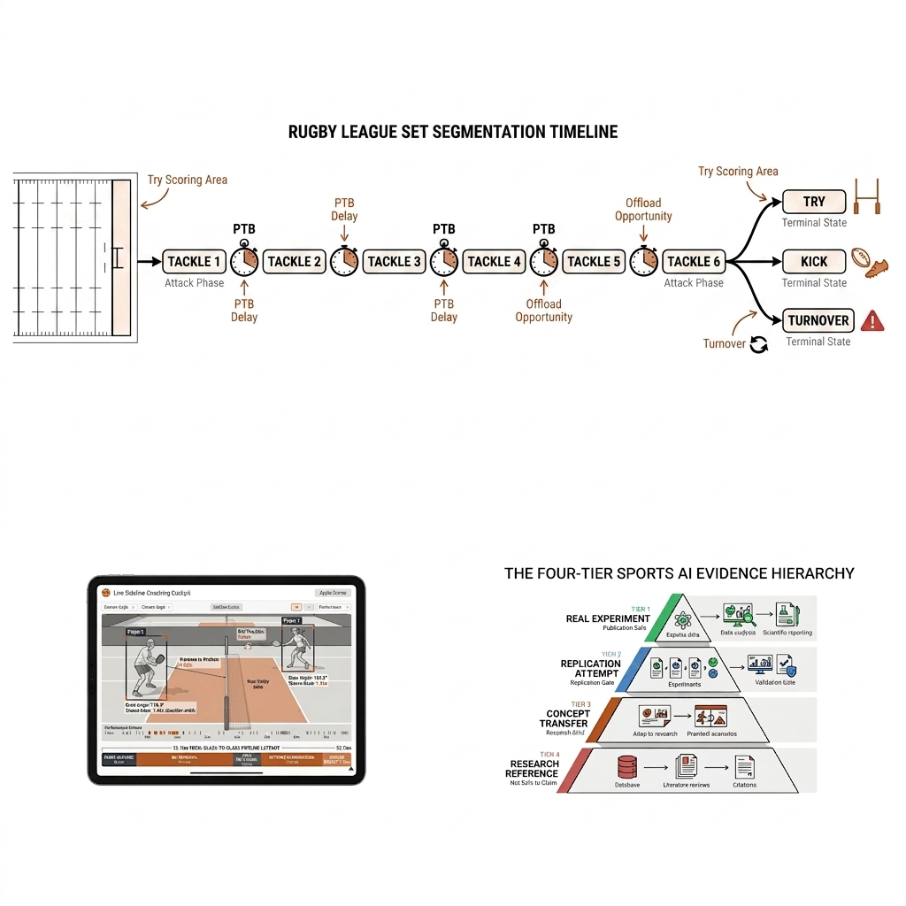
Rugby league: per-set rows — start position, tackle count, PTB tempo, terminal type — are the exact input Kempton-style xP chains and chapter 23's tactical models consume. The deterministic layer owns more here than in pickleball because the sport's grammar is a counter.
Pickleball: the rally is the unbounded analogue; the same engine with the counter removed. The six-again lesson transfers as the let: an audio-proposed irregularity that resets the point's grammar without ending it.
Payoff (tactical): set segmentation is the difference between "we were poor in yardage" and "sets starting inside our 20 m ended in kicks 71% of the time" — one is a mood, the other is a coachable fact.
Category B — Counted-Body Events: Shots & Set Plays (UC 03-07)
UC 03 — Third-Shot Detection: The Event That Feeds Chapter 22
The third shot decides whether the serving team survives the transition zone, and drive-versus-drop is the highest-value classification in the book: chapter 22's expected-value surface needs outcome-conditioned distributions, $P(\text{point won} \mid \text{drive})$ versus $P(\text{point won} \mid \text{drop})$, and an overconfident head inflates the rare-shot EV and corrupts the whole surface.
The mechanism splits ownership exactly as 19.4 prescribes. The automaton owns that the shot is third — it is a grammar fact, the position in the contact sequence, not a perception claim. The ML head owns which kind: at the contact frame, crop the striker window $[t-0.3\text{s}, t+0.3\text{s}]$, extract frozen features (chapter 16's recipe), and emit $P(\text{drive}), P(\text{drop})$ plus the margin between them. The margin is the routing variable: wide margin and $P \geq t_{hi}$ auto-accepts (audited), anything in the band goes to the queue. This is TTStroke-21's documented trap transplanted — drive/drop is a pace-arc continuum the sport discretizes, so expect the confusion mass there (source-backed, arXiv:2301.13576).
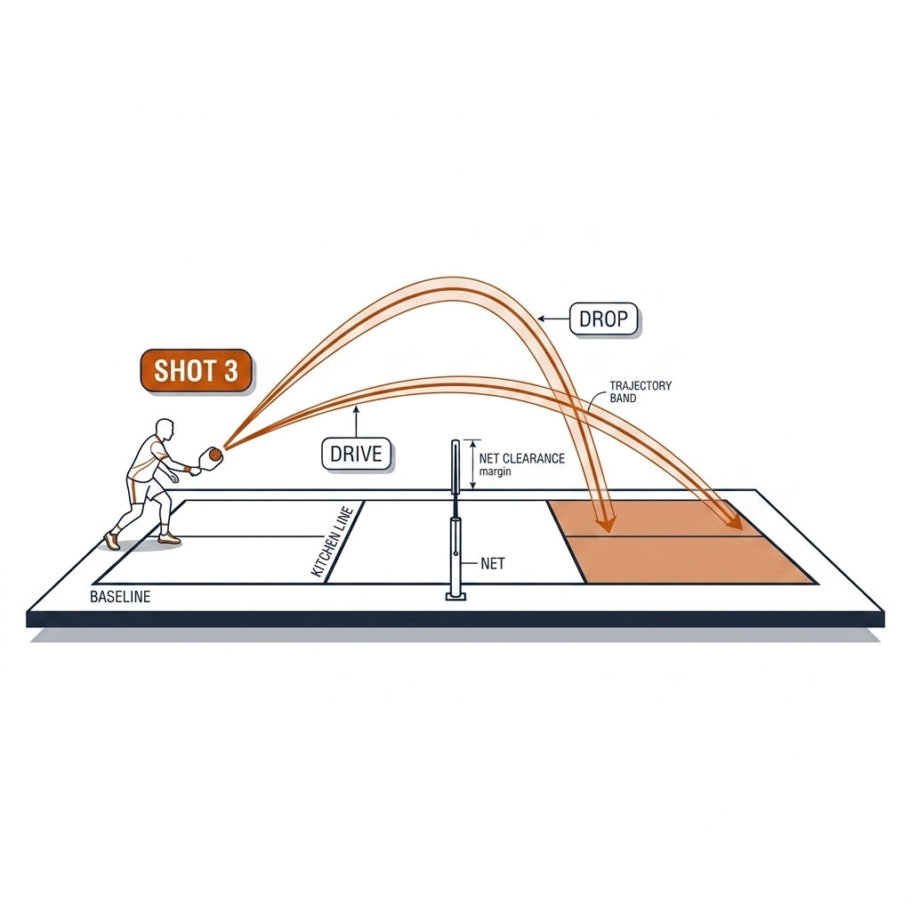
Pickleball: the typed, reviewed third shot joins to rally outcome to produce the per-state shot-value estimates with confidence intervals (chapter 20's rally-level cluster bootstrap). The classifier's uncertainty appears twice: once as queue depth, once as wider EV intervals.
Rugby league: the analogue is fifth-tackle option selection — kick versus run — which is nearer to geometric (field position plus ball track) and therefore a candidate for rule-assist rather than a pure head. Same split: the automaton owns "fifth tackle," the evidence decides the rest.
Payoff (tactical): this single event type is the input the entire decision-value layer stands on; a mislabeled third shot is not a labeling error, it is a corrupted EV estimate the coach acts on.
UC 04 — The Dink Exchange Tracker
Kitchen exchanges are where pickleball rallies are won by patience, and "who blinked first" is a real coaching question. Counting dinks in a fourteen-shot exchange by hand is exactly the tedium automation exists for — and exactly where an undisciplined classifier lies, because dink and speed-up live in the same visual family.
The mechanism is a sub-automaton nested inside RALLY state. A contact increments the dink counter when three guards hold: striker and contact point in NVZ-proximate zones (homography polygons, E05/E11 RMSE 3.82–4.65 cm, measured), soft arc signature from the ball track when visible, both teams pinned at the kitchen line. A speed-up, lob, or drive guard exits the exchange and logs the terminator type — the exchange's ending is the coaching-relevant event, not its length alone. The honesty constraint is TTStroke-21's low inter-class variability (source-backed): dink↔speed-up confusion will dominate the matrix (19.7), so the speed-up exit guard runs high-recall — queue the overcalls, because a coach forgives a false speed-up and never forgives a missed one.
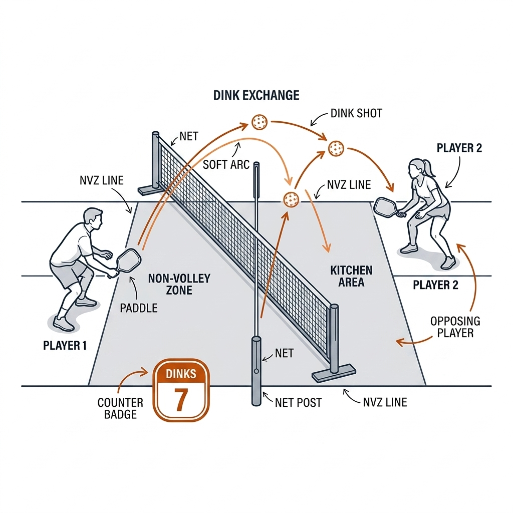
Pickleball: output rows are exchange records — length, participants, terminator type, who was forced back — aggregated per player per match. Under E04's ball wall the arc guard degrades to zone-plus-position only and the row carries confidence=medium-low with the gap named.
Rugby league: the same nested-counter shape tracks PTB tempo streaks — consecutive sub-3.5 s play-the-balls inside a set (UC 05) — where the "exchange" is ruck speed and the "terminator" is the slow ruck or the defensive line folding.
Payoff (coaching): patience is coachable only when measured; the exchange tracker converts "be more patient at the kitchen" into "your exchanges end on shot four, theirs on shot nine — and yours end on speed-ups you lose 60% of."
UC 05 — Ruck Play-the-Ball Timing Event
Ruck speed is rugby league's most quoted tempo statistic and its least consistently measured one: manually timed play-the-balls vary by half a second between analysts, which is the entire gap between "fast" and "slow." The PTB interval is a geometric measurement and should be produced by a rule, not a stopwatch.
The mechanism anchors both ends of the interval. Start: tackle completion (UC 06) — carrier grounded plus held, a containment signature from tracks and pose. End: the ball played backward with the foot — ball-track motion onset away from the carrier, with the dummy-half pickup as the fallback anchor when the ball is occluded. The event row is $\text{PTB}_k = t_\text{release} - t_\text{held}$ with both timestamps' evidence stacks attached. Chapter 28's green/red ruck bands are the practitioner play-calling thresholds [verify band values against measured distributions before print]; this use case supplies the distribution those bands should be set from. Broadcast production is the confound: replays and speed ramps break the clock, so the 19.4b metronome check (three PTBs in four seconds is a replay artifact) is a guard on the event, not an afterthought.
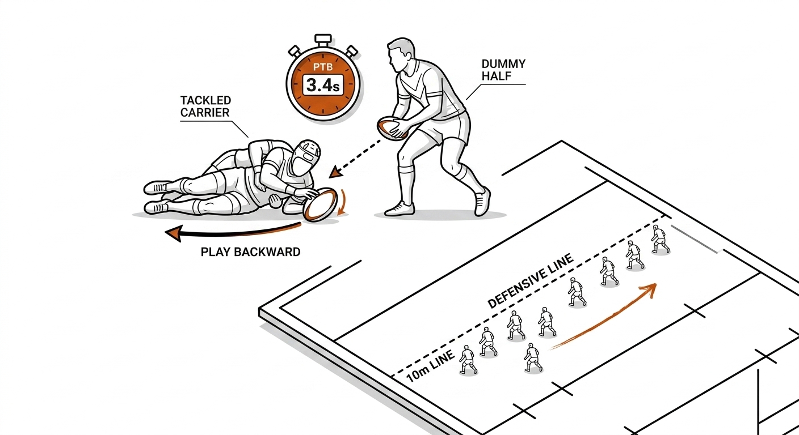
Rugby league: per-team PTB distributions by field zone, by tackle number, by fatigue window — the tempo KPIs chapter 28's cockpit renders live. E22's measured stream already consumes the sibling signal: 35 offside non-compliance alerts at the 10 m line presuppose PTB-anchored ruck locations.
Pickleball: the transferred form is inter-contact tempo inside a rally — the time between contacts shortening as a firefight develops. Same two-anchor machinery, lower stakes, useful as a pressure indicator feeding chapter 23.
Payoff (coaching + broadcast): tempo becomes a measured distribution instead of a commentator's adjective, and the measurement cost per match drops to the queue clearance of the occluded-ruck residue.
UC 06 — Tackle Completion Event
The tackle count is rugby league's clock; an off-by-one count corrupts every set statistic built on it. The event sounds trivial — a carrier is tackled — until the footage shows four bodies in a pile and the broadcast has cut to a crowd shot.
The mechanism is hybrid by design. Vision proposes: defender-carrier contact plus carrier downward velocity plus grounded pose (chapter 11's pose stream). Audio confirms: the referee's held call and whistle (chapter 15). Agreement upgrades the row to confirmed; disagreement queues both hypotheses. Under bodies — the dense-occlusion case chapter 10's UC 09 separates with mask memory — the event stays review_required=yes; the count is too load-bearing to guess. The transition-table consequence: TACKLE_k → PTB fires only from a confirmed or reviewed completion, and a sixth-tackle completion with no terminal guard within the bounded window emits TURNOVER as count expiry — a grammar conclusion, not a perception claim.
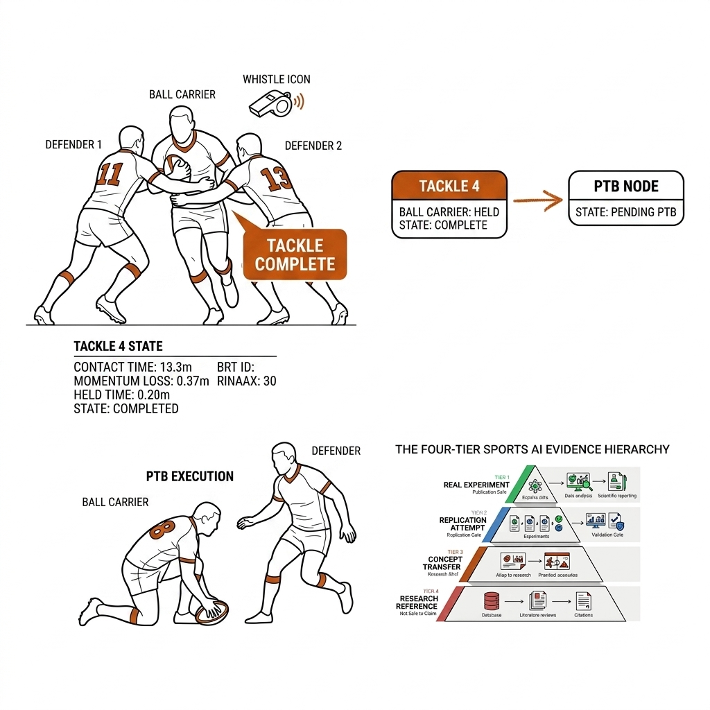
Rugby league: every PTB interval (UC 05), every kick (UC 07), every xP chain (chapter 23) indexes into the count this event maintains. The welfare lane hangs off it too: the Bath et al. head-contact screen (68% sensitivity / 84% specificity, source-backed) runs on the tackle-completion window, every positive and a random negative sample going to mandatory human review.
Pickleball: the structural sibling is the let — an audio-proposed, vision-confirmed irregularity that pauses the grammar without terminating the point. Both sports teach the same lesson: the events that look simplest are the ones everything else indexes, so they get the strictest gates.
Payoff (officiating + analytics): a trustworthy count is invisible — every downstream number quietly becomes right, and the queue absorbs exactly the occlusion cases where humans disagree anyway.
UC 07 — The Kick Event
Roughly one set in four ends in a kick, and kick type — bomb, grubber, touch-finder, 40/20 attempt — drives the field-position value the next set starts with. A kick event that says only "kick occurred" wastes the most information-dense terminal in the sport.
The mechanism is near-rule from the ball track: in TACKLE_5/6 state (or earlier — the guard is state-aware, not state-captive), foot-ball contact followed by the ball leaving the boot on a long ballistic arc fires KICK. The ball's apex and landing polygon then classify the outcome: in-goal, touch, dead, fielded-in-play. Broadcast ball tracking hits the same visibility wall as pickleball's E04 — a 300 g oval at 25 m altitude against stadium lights — so a lost ball mid-flight emits the kick with landing=unknown and a queue entry rather than a guessed polygon. The pickleball transfer is direct: the lob is the same near-geometric arc event, and 19.6 already flags lob as the taxonomy's rule-assist candidate.
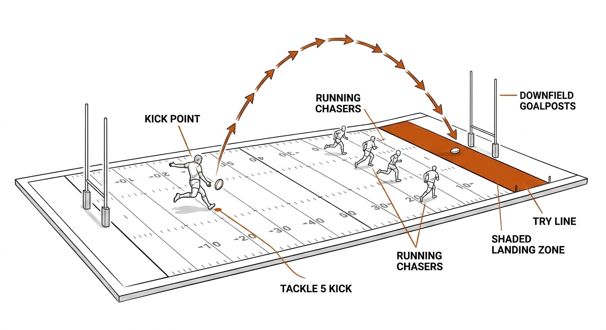
Rugby league: kick-type × landing-zone rows feed the possession-value surface and the chase-versus-fielding matchup analysis — who kicks, to where, with what chase line, is three geometry queries once the event rows exist.
Pickleball: lob detection rides the identical guard shape (arc signature plus apex height), and the lob's outcome polygon — in court, out, or smashed back — closes the rally grammar's most escape-prone state.
Payoff (tactical): kicking stops being a highlight category and becomes a measured decision: type, target zone, outcome, and the expected value of the set that follows.
Category C — Adjudication & Gating Events (UC 08, 09)
UC 08 — Fault Classification: Kitchen, Net, Out
A fault ends the point, but the fault's class is what coaching needs: a kitchen foot fault is a technique fix, a net fault is an execution error, an out fault is a judgment error. Three different conversations hide inside one terminal state.
The mechanism is three rule-owned classes with explicit priority — adjudication events outrank rally events in the 19.2d table header. Kitchen foot fault: the E10 contact instant (0.814 precision, measured) ∧ the striker's foot point inside the NVZ polygon at that instant, both through the calibrated homography (E05/E11, RMSE 3.82–4.65 cm, measured) — pure geometry, no model trusted over the rule. Net: the ball track terminates at the net plane without crossing. Out: the landing point falls outside the court polygon. E22's measured stream shows the kitchen class at working scale: 27 NVZ foot-fault warnings at p = 0.012, feet 2.4–4.0 cm across the line (constructed stream — a demonstrated ceiling, not a season rate). Every printed foot fault stays human-confirmed, because 4 cm is inside the same order as the homography error and the row must say so.
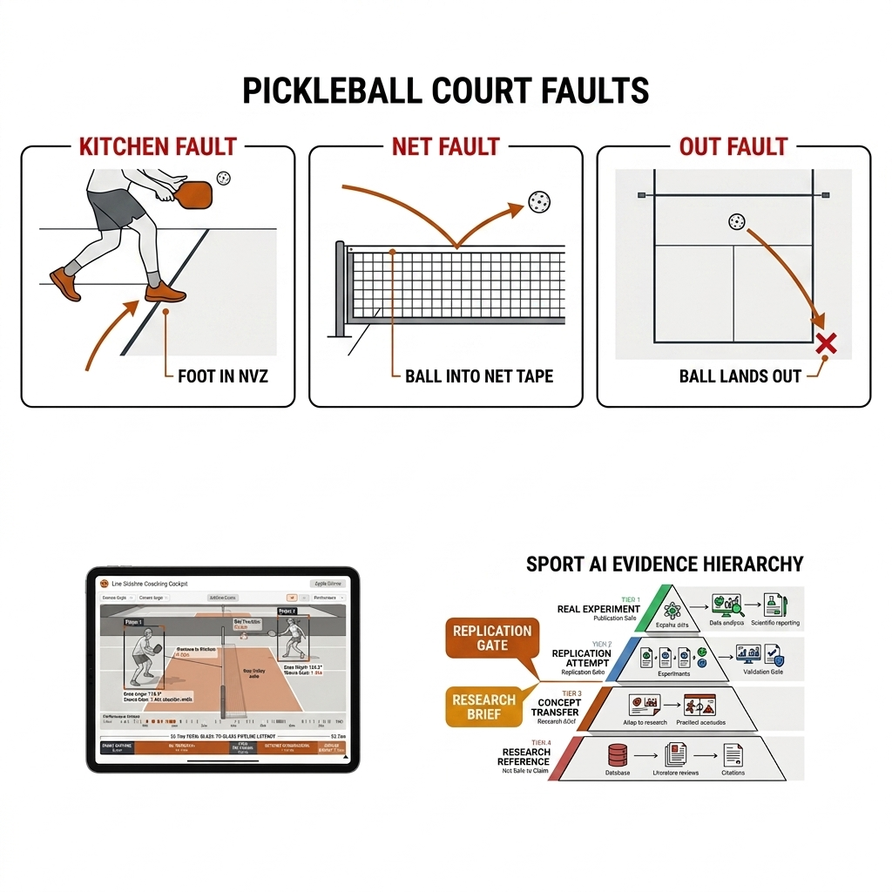
Pickleball: fault-class distributions per player are the highest-signal technique report the pipeline produces — a player whose faults are 70% kitchen violations has a different problem from one whose faults are 70% out balls, and the eventing layer separates them for free once the classes are rule-owned.
Rugby league: the siblings are forward pass, knock-on, and offside at the 10 m line — the last already geometry in E22 (35 offside non-compliance alerts, measured on the constructed stream). Same priority rule: the adjudication event outranks the set event competing for the same frames.
Payoff (officiating + coaching): adjudication events carry proof obligations — each printed fault points at the exact rule, the exact foot point, the exact polygon — which is what makes a machine call defensible to a referee and useful to a coach.
UC 09 — Event Confidence Gating at p < 0.05
An event feed without significance gating is an alert firehose, and coaches mute firehoses within a week. The gating problem is the chapter's thesis applied to alerting: most candidate events are noise, and the system should prove it event by event.
The mechanism is E22's two-stage gate (measured, experiments/e22-humans-above-the-loop). Stage one is structural: the state machine suppresses grammar violations — a "speed-up" nominated in SERVE state, a tackle seven, a contact with no legal predecessor. Stage two is statistical: survivors carry a p-value against the team's baseline distribution, and only p < 0.05 alerts. On a 1,000-event constructed stream across both sports, 119 alerts surfaced and 88.1% were structurally suppressed at 0.08 ms processing cost. The framing is selective prediction (Geifman & El-Yaniv, NeurIPS 2017, source-backed) with the grammar doing most of the rejection work: coverage is the dial, risk is the price, and the risk-coverage curve is the owned policy artifact (chapter 20). The caveat is on record: E22 is a constructed stream, not a season; 88.1% is a demonstrated ceiling [verify suppression rate on real footage].
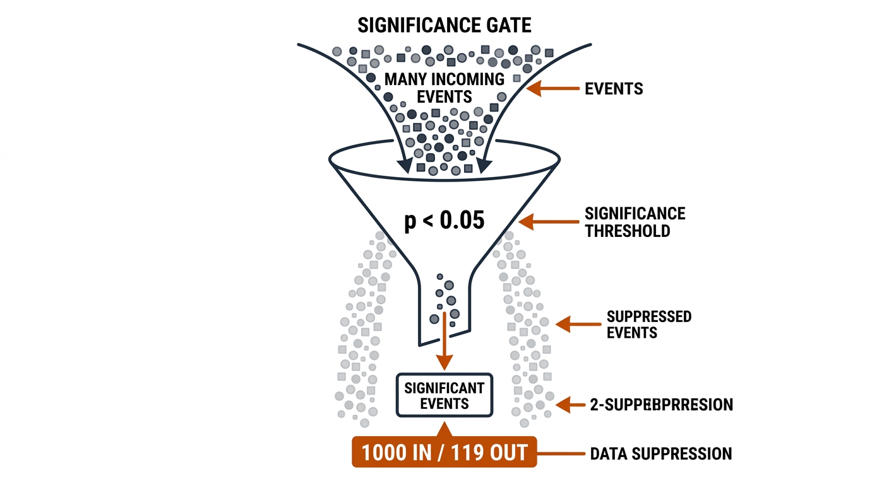
Pickleball: the surfaced alerts were 27 NVZ foot-fault warnings (p = 0.012) and 25 middle-seam exposures (p = 0.034, lateral gap expanding from 2.7 m toward 4.1 m) — events a coach recognizes instantly, carrying a significance statement instead of a vibe.
Rugby league: 32 dog-leg ruptures and 35 offside non-compliance alerts at the 10 m line — the defensive-structure events that normally require a full video session to count, emitted with p-values at 0.08 ms.
Payoff (coaching trust): the gate is what makes the 8–12 clip rule achievable — the queue may hold 200 items, but the coach-facing artifact is the dozen that are both true and significant, and significance is what keeps the channel unmuted.
UC 10 — Event-to-Video Alignment: The One-Spine Join
An event table that cannot jump to the exact video frame is a spreadsheet, not a tool. Every use case above is worth nothing to a coach until one click on the row plays the clip — and that join is an engineering problem in its own right, because three clocks disagree at every contact.
The mechanism is 19.4b made concrete. The 30 fps video frame clock (33 ms grid on pb-003), the millisecond-fine audio onset clock (chapter 15), and the track clock meet at each event; the rule is audio proposes the when, vision confirms the what, and the event timestamp is the contact frame nearest the audio onset whose vision evidence agrees. Agreement upgrades the row to confirmed; disagreement queues both timestamps rather than silently picking one. Rugby league adds the broadcast production clock — replays and speed ramps — detected by the PTB metronome guard: three PTBs in four seconds is a replay artifact, not a set. The binding constraint: no event carries more precision than its worst agreeing clock [verify residual distribution on multi-camera footage].
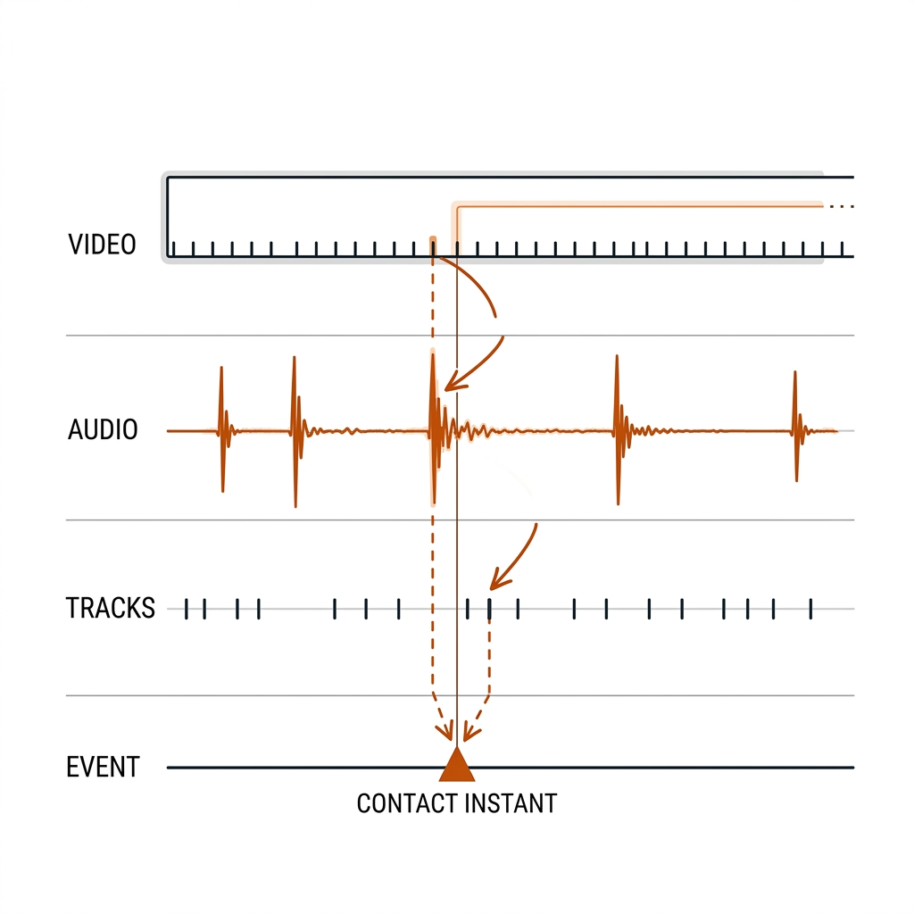
Pickleball: fixed-camera footage is the kind case — one production clock, a stable 30 fps grid — and the join is where the chapter 16 retrieval layer's "similarity is not occurrence" rule pays off: the event row, not the embedding, owns the timestamp.
Rugby league: broadcast PTZ is the hostile case — cuts, replays, speed ramps — and the metronome guard is what keeps a replayed tackle from double-counting the set. The join quality gates everything downstream: a season table with 200 ms timestamp drift misaligns every clip in the coach's Monday session.
Payoff (workflow): the 8–12 clip deliverable assembles itself — reviewed rows, one spine, click to clip — and the weekly summary doubles as the audit surface because every rendered clip is a join that worked.
19.8c The Eventing Ecosystem
The layers above sit on a small ecosystem of schemas, datasets, and calibration tools. The comparison table is the honest map — including what each piece cannot do:
| Tool / Schema | What It Provides | Pickleball Use | Rugby League Use | Status |
|---|---|---|---|---|
| PBN / NRLSheet dictionaries (C17) | Row schema: per-field confidence, review_required, human_correction, unknown policy | 12-event taxonomy (19.6), coverage-gap rows (pb003-e005) | Set/tackle/PTB rows with unknown-class gaps | Book-internal, measured |
| kloppy / SPADL (C17) | Open event-schema tooling and action-value vocabulary from soccer | Serialization target for reviewed rally events | Set-event serialization; SPADL-style value framing | Source-backed (open source) |
| FIFA Football Language / EPTS | Event definitions written so tracking can translate into them | Template for proof-carrying event definitions | The industry precedent for the three-layer shape | Source-backed (FIFA); quantitative reuse [verify] |
| Stats Perform Opta | Settlement-grade CV + human-verification pipeline | Proof the queue is the product at scale | The operating-point discipline (welfare vs stats feed) | Vendor-stated practice [verify specifics] |
| TTStroke-21 + CRISP | Stroke detection + 20 classes + a 21st rejection class | The external template for shot typing; the unknown-class proof | Detection-before-classification split for tackle typing | Source-backed (arXiv:2301.13576); data access [verify] |
| TrackNet-Pickleball | Ball-track adaptation that converts E06 windows into contact-anchored rallies | The missing ball stream behind UC 01/03/04/08 | Not applicable (oval ball needs its own tracker) | Open repo; license [verify] |
| timm / OpenCLIP frozen heads | Small honest classifiers over frozen features (C16 recipe) | Drive/drop/dink heads on ~500 IRR-gated crops | Head-contact screen head (Bath et al. posture) | Source-backed; M4-feasible (frozen), Colab for fine-tune |
| Temperature scaling / selective prediction / conformal | Calibration and coverage machinery (Guo 2017; Geifman & El-Yaniv 2017; Angelopoulos & Bates 2021) | Calibrated third-shot margins; risk-coverage curve for the queue | Welfare-screen operating point, high-recall end | Source-backed; conformal set sizes at ~500 labels [verify] |
| Kempton et al. 2016 (NRL xP) | Expected possession value per set | Model for the C22 EV surface's structure | The canonical value layer set events feed (UC 02) | Source-backed (PMID 26190116) |
19.8d Runnable Skeleton: The Table-Driven Automaton
The engine both sports share is forty lines: a transition table, guard facts, and a step function that emits UNKNOWN rather than guessing. This is the UC 01-02 spine; UC 03-08 plug in as guards and heads on top of it.
# Table-driven eventing automaton — pickleball instance shown.
# Rugby league swaps TABLE for the set grammar (SET_START, TACKLE_k, PTB, ...).
TABLE = {
"IDLE": {"stationary_ball_then_below_waist_contact":
("SERVE", "serve", ["ball", "pose", "feet"])},
"SERVE": {"second_contact_receiving_side":
("RETURN", "return", ["contact", "zone"]),
"serve_lands_outside_box":
("FAULT", "fault_out", ["ball", "polygon"])},
"RETURN": {"third_contact_serving_side":
("THIRD", "third_shot", ["contact"])}, # grammar owns "third";
# the ML head owns drop/drive
"THIRD": {"contact_alternates": ("RALLY", None, ["contact"])},
"RALLY": {"foot_in_nvz_at_contact":
("FAULT", "kitchen_foot_fault", ["contact", "pose", "polygon"]),
"ball_net": ("FAULT", "fault_net", ["ball"]),
"ball_out": ("FAULT", "fault_out", ["ball", "polygon"]),
"double_bounce": ("POINT", "point", ["ball"])},
}
def step(state, facts, evidence):
"""facts: guard names true this frame; evidence: streams present.
A guard fires only when its required evidence exists (19.2b rule)."""
for guard, (nxt, event, needs) in TABLE.get(state, {}).items():
if guard in facts:
if all(n in evidence for n in needs):
return nxt, {"event": event, "basis": guard,
"review_required": False}
# Evidence gap: degrade, do not guess (19.5).
return state, {"event": "unknown", "basis": guard,
"gap": [n for n in needs if n not in evidence],
"review_required": True}
if facts: # facts present but no legal guard: queue, never nearest-state
return state, {"event": "unknown", "review_required": True}
return state, None
Three properties are the chapter in miniature: guards carry evidence requirements, so E04's ball wall degrades outputs to unknown instead of inventing shots; unmatched facts queue rather than snap to the nearest state, which is how a tracker glitch at the kitchen line is prevented from becoming a phantom dink; and the table — not the code — is the design artifact a reviewer audits (19.2d).
19.8e What This Adds to the Pipeline
The ten use cases are the connective tissue between the perception stack and the value layers. Upstream: UC 01-02 consume chapter 9's tracks and chapter 5/14's calibrated homography; UC 03, 04, 08 consume chapter 12's ball track, chapter 15's audio onsets, and chapter 11's pose; UC 06, 10 consume chapter 15's whistle/onset lane. Downstream: UC 01's rally segments are the cluster-bootstrap unit for chapter 20's intervals; UC 03's calibrated third-shot types are the input chapter 22's EV surface cannot function without; UC 02 and UC 07's set and kick rows feed chapter 23's tactical models and the Kempton-style value chains; UC 05's PTB distributions and UC 09's gated alerts are what chapter 28's cockpit renders. Sideways: chapter 16's retrieval layer ranks these events but never mints them; chapter 18's annotation machinery labels the crops that train UC 03's head; chapter 17's row schema is where every event lands. The boundary rule holds throughout: an event's tier is decided by its epistemics, not by which model happens to be available.
19.9 Transfer Note: Rugby League Set Eventing
The same three layers apply with the rugby grammar: deterministic = set count + PTB + tackle-hold gates; learned = Bath et al. head-contact screen (~68% sensitivity / 84% specificity); hybrid = tackle-type ambiguity confirmed by audio (the whistle). The missing-data rule transfers: no ball evidence, no kick event; NRLSheet carries unknown. League's hard counter and metronome make its automaton the simpler of the two, which is why the machinery was pressure-tested on pickleball first — if the grammar survives an unbounded rally with an invisible ball, a six-tackle set with a 300 g oval is a relief, and E18's measured 81.4% code reuse is the transfer made quantitative.
19.10 The Eventing Recipe (Copy This)
- Grammar first: transition-table state machine, correct wherever geometry decides.
- Define events as transitions: timestamped, evidence-backed, hierarchy-aware. A label that contradicts the current state is UNKNOWN + queue.
- Score every event on its evidence stack; calibrate ML heads on held-out rallies.
- Route by tier: high auto-accept (audited), medium review, low discard. Thresholds are owned policy, per class.
- Cap the queue: 8–12 selected clips per session, not a dump.
- Align clocks: audio proposes when, vision confirms what; disagreement queues both timestamps.
- Human corrections write back; the queue doubles as active learning.
- Missing data → unknown, never invented.
- Publish confusion matrices and risk-coverage curves, intervals clustered by rally.
19.11 What I Would Measure Next
- Contact-crop CNN on ~500 labels: 12×12 confusion matrix, ECE before/after temperature scaling, risk-coverage curve, conformal set sizes [verify].
- Live queue over pb-003: correction rate, decisions/minute, clearance time for 8 presented clips.
- E22 suppression rate on real season footage — 88.1% is a constructed-stream ceiling, not a season number.
- Rugby deterministic layer measured against nrl-001 set chart, with six-again precision reported separately.
- Audio-vision timestamp residual distribution across both sports.
19.12 Sources
- E06 (experiments/e06-events); C19 lab (experiments/c19-eventing/outputs/metrics.json); E22 (experiments/e22-humans-above-the-loop, 88.1% suppression, p < 0.05, measured); E04/E05/E10/E11/E18 (measured); PBN Data Dictionary; pb003-e005 coverage-gap row.
- Bath et al. 2025, Injury Prevention (PMID 39832883); Kempton et al. 2016, NRL xP (PMID 26190116).
- TTStroke-21 / MediaEval 2021-2022 (https://multimediaeval.github.io/editions/2021/tasks/sportsvideo/); CRISP (https://arxiv.org/abs/2301.13576).
- Guo et al. 2017 (https://arxiv.org/abs/1706.04599); Geifman & El-Yaniv 2017 (https://arxiv.org/abs/1705.08500); Angelopoulos & Bates 2021 (https://arxiv.org/abs/2107.07511); Madras et al. 2018 (https://arxiv.org/abs/1801.07866).
- FIFA automated event data (https://inside.fifa.com/innovation/innovating-the-game/automated-event-data-collection); Stats Perform Opta (https://www.statsperform.com/products/opta-data/) [verify quantitative reuse].
- Coaching workflow dossier, 8–12 clip rule and IRR protocol (2026-08-30).